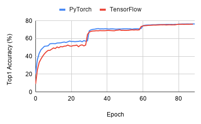
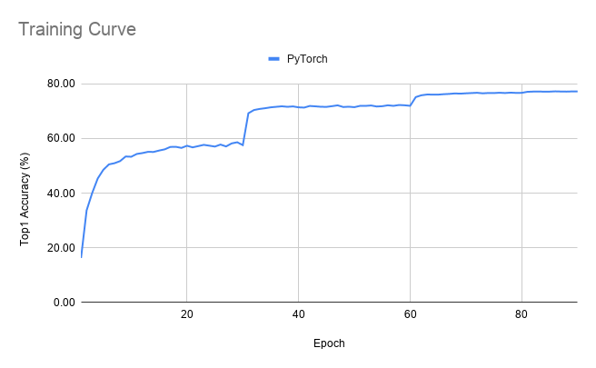
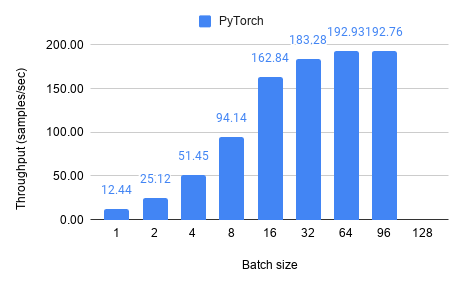
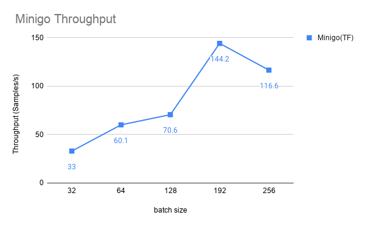

TBD - Training Benchmark for DNNs
TBD is a new benchmark suite for DNN training that currently covers seven major application domains and nine different state-of-the-art models. The applications in this suite were selected based on extensive conversations with ML developers and users from both industry and academia. For all application domains, we selected recent models capable of delivering state-of-the-art results. We intend to continually expand TBD with new applications and models based on feedback and support from the community.
This is a joint project between the EcoSystem Research Group at University of Toronto and Project Fiddle at Microsoft Research, Redmond.
We also have collaborators from UBC and University of Michigan.
Our benchmark suite is now open sourced on Github.
| Application | Model | Number of Layers | Dominant Layer | Implementations | Maintainers |
|---|---|---|---|---|---|
| Image classification | ResNet-50 Inception-v3 |
50 (152 max) 42 |
CONV | TensorFlow, MXNet, CNTK | Hongyu Zhu |
| Machine translation | Seq2Seq Transformer |
5 12 |
LSTM Attention |
TensorFlow, MXNet TensorFlow |
Bojian Zhang Andrew Pelegris Yu Bo Gao |
| Language modeling | BERT | 24 | Attention | PyTorch | Xin Li |
| Object detection | MaskRCNN EfficientDet |
101 | CONV | PyTorch PyTorch |
Hongyu Zhu Yu Bo Gao |
| Speech recognition | Deep Speech 2 | 9 | RNN | MXNet, PyTorch | Kuei-Fang Hsueh, Jiahuang Lin |
| Recommendation system | NCF | 4 | GMF, MLP | PyTorch | Izaak Niksan |
| Adversarial learning | WGAN | 14+14 | CONV | TensorFlow | Andrew Pelegris |
| Deep reinforcement learning | A3C | 4 | CONV | TensorFlow, MXNet | Mohamed Akrout |
(Note that all of the following results were generated on NVIDIA RTX 2080Ti GPU)
Image classification
Details of ResNet-50
Training curve
Compute Utilization

FP32 Utilization
Throughput

Details of Inception-v3
Training curve
Compute Utilization

FP32 Utilization

Throughput
Machine Translation
Details of Seq2Seq
Details of Transformer
Language Modeling
This benchmark focuses on BERT(Bidirectional Encoder Representations from Transformers), which is a multi-layer bidirectional Transformer, with only the encoder part. There are many newer LM such as RoBERTa and DistilBERT, but since it architecture has many similarities with the original BERT model, we believe the benchmarking results for BERT is representative to many of such transformer based Language Models.
BERT appears in two training settings: pre-training and fine-tuning. The pre-training phase uses an abundance of text from sources such as Wikipedia and published books (see the dataset link below), and trains for many epochs. The fine-tuning phase locks most of the weights of the BERT model, and attaches a few output layers for the down-stream task, e.g. question-answering. This usually converges really fast since most of the parameters are fixed, as seen in the loss curve in the fine-tuning section.
We perform the benchmark for both FP32 and mixed-precision training, as mixed precision training is commonly seen on BERT due to its high computation demand. We also utilize the TensorCores on our RTX2080 Ti device.
Given the large model size of BERT and the size of the dataset, the pre-training takes many days to train even on a high-end Multi-GPU workstation such as the DGX system. Therefore, we decided to skip the complete pre-training of BERT, but still analyze the convergence for 1 epoch. The training suggests that the model is converging properly. The profiling results is based on 500 iterations, and assumes the same compute behavior for each iteration.
Details of BERT Pre-training(PyTorch)
Throughput
FP16 Core Utilization
Details of BERT Fine-tuning(PyTorch)
Training Curve
Training Throughput
FP16 Core Utilization
Object Detection
A training iteration of Faster R-CNN consists of the forward and backward passes of two networks (one for identifying regions and one for classification), weight sharing and local fine-tuning. The convolution stack in a Faster R-CNN network is usually a standard image classification network, in our work: a 101- layer ResNet.
Mask R-CNN improves on Faster R-CNN by improving the rectangular bounding boxes to a pixel-level resolution. This is done in part by adding a branch to the network which outputs whether each pixel is part of a given object. We have chosen ResNet-50 as the pre-trained convolution stack for this model.
Details of MaskRCNN
Details of EfficientDet

Speech Recognition
Details of Deep Speech 2
Throughput
Compute Utilization
FP32 Utilization
FP16 Utilization
Generative Adversarial Networks
Details of WGAN
Compute Utilization

FP32 Utilization

Throughput

Memory breakdown

Recommendation
Details of Neural Collaborative Filtering
Training curve

Compute Utilization

FP32 Utilization

Throughput

Deep Reinforcement Learning
Details of Minigo
Training curve
Throughput
Compute Utilization
FP32 Utilization